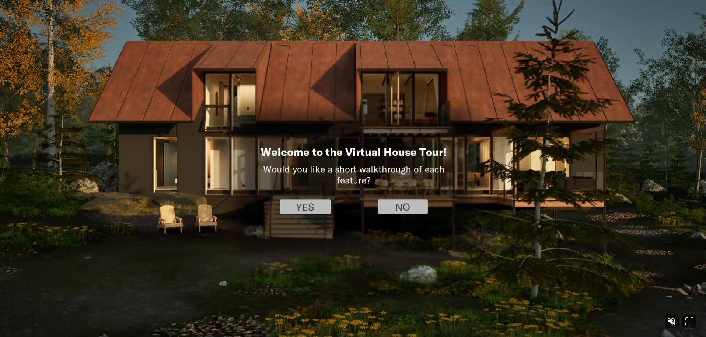

Role
Developer
Virtual House Editor is a project I worked on as the sole developer alongside three artists for our work placement.
This was done in collaboration with an external client, who wanted a virtual walkthrough to showcase their custom home services.
Learning to work with an external client to determine the type of product that we could build to meet their vision without going out of scope was a valuable learning experience for our team, who up until that point had only worked on small, self directed projects.
The final product was also quite impressive in terms of what we were able to achieve in a short period of time.
Developer
2023
Unreal Engine 5
Software
Blueprints
PC
Client Project (Group), Prototype
As our client specialized in custom homes using a catalogue of predetermined components,
they wanted their potential clients to be able to make some adjustments to the house as they toured it.
To achieve this, a room editor was created to enter an 'edit mode.' This mode could be accessed either by clicking on a button that was floating in the room,
or by selecting the room from the list of rooms in the UI, which would also teleport them to the room in question.
Once in this edit mode, they were shown a menu listing all of the editable elements of the room.
The primary option the user had for editing the room was changing the finish of the object.
Changing the finish was as simple as changing the material applied to the mesh, but communicating this information between the object and the menu was
the more challenging task.
Each object contained references to the different materials that could be applied to it, including their descriptions and names. When the player entered the room editor,
it would tell the UI what elements in it were available for editing, and pass references to them so that the information about their materials could be used to
populate the menu.

One of the features that our client wanted to highlight was a modular wall and windows system that allowed their client to choose their own wall and window layout.
To show this off in the software, each wall panel was set up with a 3D button that appeared in the edit mode.
When pressed, the mesh for the wall would swap to a window, and vice versa.
One extra consideration that needed to be taken into account was that the exterior of the house would need to change to match this as well.
To achieve this, an event was set up to broadcast whenever the wall panel was changed. The exterior pieces around it would have a reference to the wall panel,
and subscribe to this event, so they could update their materials and/or meshes accordingly.
To allow the user to get the best view of the room they were editing, some rooms were set up with two camera angles, and a button was added to the menu to allow them to swap between them as needed.

To ensure the project was able to reach a wide audience of varying technical backgrounds, it was important to make sure the software was easy to access and easy to use.
Because the computer literacy of the users for this software could vary wildly, we made sure to include a tour of the features that the user would be interacting with at the very beginning, and a button that would pull up labels for all of the buttons on their UI.
To ensure users's would be able to run the software from any device, we made this project compatible with Unreal's pixel streaming plugin, which allowed the project to be hosted on a remote service and run through the cloud. This allowed the service to be accessible on any device, including tablets and smartphones. This was a challenging feature to implement, as we wanted to make sure the game ran smoothly over the cloud, but the clients wanted to best possible environment and lighting to showcase their product. We managed to achieve this by carefully managing the texture budget of the project, and capping the frame rate to 30 so that it would remain consistent.
To ensure anyone would be able to navigate the house, we implemented two different options for moving: Click to Move or Keyboard. When using Click to Move, the user simply needs to double click on the ground to 'walk' to the spot that they clicked on, similar to navigating in Google Street View. If their mouse is hovering over an invalid location, then their cursor would display a circle with a line through it, and if the location was valid, it would show a foot icon. This movement mode required the use of Unreal's navigation system, and adjustments had to be made as the house was designed to match the scale of it's real life counterpart, whereas Unreal's navigation system was built for the exaggerated scale video games use. When using the keyboard movement style, they would be able to use the WASD or Arrow Keys to move around manually. In both modes, they would hold the left mouse button and drag their mouse to move the camera. For users who didn't want to walk through the house, we also included a list of all the editable rooms under the mini map, which would teleport the player to the selected room and put them right into editing mode.